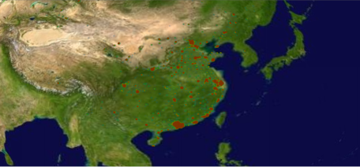
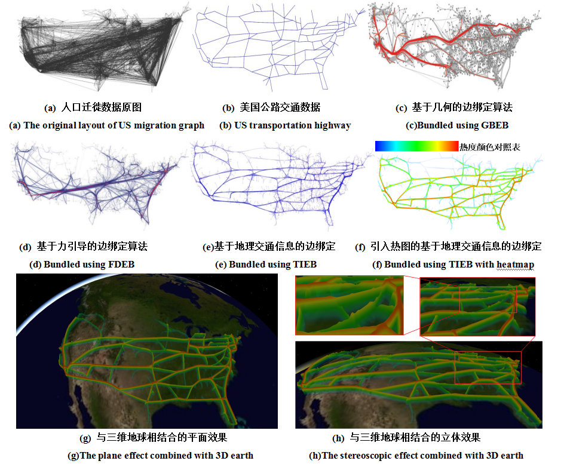

-
- Basic info. 基本信息
- 个人信息: 辛姝悦 / 女 / 26岁
- 教育经历: 硕士研究生 / 燕山大学计算机系(2008.9-2015.7) / 本硕连读（免试推荐）
- GitHub: www.github.com/haha214
-
- Experience. 项目与工作经验
国家863项目——空天XX项目（2013.03 - 2014.12）
-
热力图可视化
该项目是为某航空所建立的空天相关项目，主要为实现相关数据的可视化，以一种良好清晰的表现形式展现数据：通过颜色差异及柱体的高低代表数据大小，使用户可以从某特定战场数据中快速获取相关信息，了解战场分布的总体情况
用三维热力图（OSG、OSGEarth、Shader实现）进行数据可视化并分析，同时针对大规模数据利用GPU计算降低时间复杂度（CUDA实现）
发表相关论文：聂俊岚, 辛姝悦, 张继凯, 郭栋梁. 一种改进的地理交通信息热图可视化方法[J].四川大学学报(工程科学版), (EI收录期刊),2015(04)
 -
边绑定可视化
该项目是为某航空所建立的空天相关项目，主要为实现相关数据的可视化，以一种良好清晰的表现形式展现数据：在减少图可视化复杂性的前提下同时将对其有影响的地理信息表现出来，达到了以最简单的形式展现最多信息的目的
选取合理的可视化方法进行数据分析与实现：针对边混乱问题，利用最短路径策略计算出对数据产生影响的交通信息，并根据交通信息拟合出若干贝塞尔曲线用于代替原图可视化中的线，同时提出控制点合并策略进一步优化
发表相关论文：Junlan Nie, Jikai Zhang, Shuyue Xin, Dongliang Guo. Road network information based edge bundling [J]. Journal of Computational Information Systems(JCIS), (EI收录期刊),2015 Vol.12(13)

中国一重大连工程技术有限公司 前端工程师（2015.07 - 至今）
-
公司内部统一门户网站建设
该项目的意义在于将企业内部各个业务系统有效的整合为一体，解决由于内部业务网站繁多无法互相协同，导致使用人员需牢记大量的用户名、密码等信息，管理人员进行信息维护相对比较困难的问题
工作职责：负责网站的前端设计与构建
-
公司内部项目管理系统建设
此项目管理系统的意义在于，该项目将提高企业项目的管理水平、工作效率以及工作质量，同时对项目成本的考核、信息财富的积累以及提高市场竞争力。
工作职责：负责网站的前端设计与构建
-
公司内部项目管理系统移动端网页版建设
在已有项目管理系统基础上，进一步开发移动端网页版，方便员工便携式工作
工作职责：负责移动端网站的前端设计与构建
-
公司内部项目计划管理系统
实现项目计划上报、审核、进度跟踪和变更的功能
工作职责：负责移动端网站的前端设计与构建
-
公司内部数字图书馆系统
利用网络整合书籍刊物资源，为员工提供书籍刊物的在线阅读和下载
工作职责：负责移动端网站的前端设计与构建
个人项目
-
- Skill. 技能清单
Web前端
-
HTML / CSS
能够编写语义化的 HTML，模块化的 CSS，完成较复杂的布局
熟悉PC端及移动端的前端开发、多浏览器兼容及部分移动端机型适配方式
-
JavaScript
熟悉原生Javascript，能脱离jQuery等类库编码
能运用模块化、面向对象的方式编程
熟悉jQuery/Bootstrap的使用、定制与扩展，阅读过部分源代码
后端
-
Node.js
能够使用Node.js API/Express搭建简单的后端程序与数据库交互、渲染模板
了解异步I/O及事件驱动模型，了解异步编程解决方案
-
其他
了解c++，有过国家军工863项目经验
有使用MongoDB、Redis数据库经验
对OpenGL、OSG有一定了解，进行过数据可视化开发
其他
-
热爱研究，研究生期间完成两项军工大数据可视化项目，并发表相关论文两篇（EI收录）
前端爱好者，16年初入前端坑，和志同道合的小伙伴们协作构建午安网并负责前端开发，现进行到1.1.3版本
对构建炫酷界面，漂亮可视化效果没有抵抗力，乐此不疲，希望2年内能成为一名独立的前端攻城狮
能够熟练掌握git的大部分常用操作
能够熟练使用 Markdown 进行写作